周六
7:30 PM — 9:00 PM
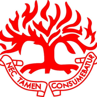
Gereja Presbyterian CLARION长老会新山宣道教会 欢迎来访 →DECLARATION OF FAITH・信仰宣言
“Now this is eternal life: that they know you, the only true God, and Jesus Christ, whom you have sent.”
John 17:3・NIVISKANDAR PUTERI・JOHOR
一个敬拜上帝、彼此相爱、扎根真道的属灵家园。无论您在人生的哪个阶段，我们都诚挚欢迎您。A spiritual home where we worship God, love one another, and grow deep roots in His Word. Wherever you are in life, you are warmly welcome here.
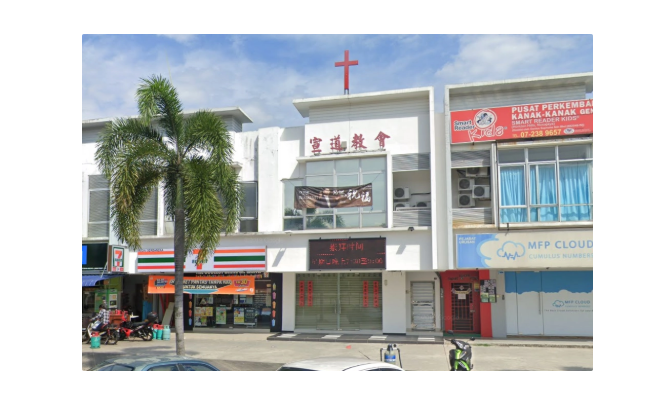
OUR CHURCH・我们的教会“我们爱，因为神先爱我们。
约翰一书 4:19
WORSHIP・敬拜
每周相聚，同心敬拜，聆听真道。期待与你和家人见面。We gather each week to worship with one heart and listen to God’s Word. We look forward to welcoming you and your family.
7:30 PM — 9:00 PM
10:00 AM — 11:00 AM
ORDER OF WORSHIP・崇拜程序
我们以敬拜、祷告和真道，一同来到神面前。Through worship, prayer and the Word, we come together before God.
WHAT'S ON・近期消息
教会生活不只在礼拜堂里。这里有装备、节庆、关怀与音乐，欢迎你预留时间参与。Church life reaches beyond the sanctuary. Join us for faith formation, celebrations, community care and music.
2026・九月中旬
愿意更深入认识基督信仰、预备接受洗礼的弟兄姐妹，欢迎向谢雅美传道报名。For those who wish to know the Christian faith more deeply and prepare for baptism. Please contact Preacher Xie Yamei to register.
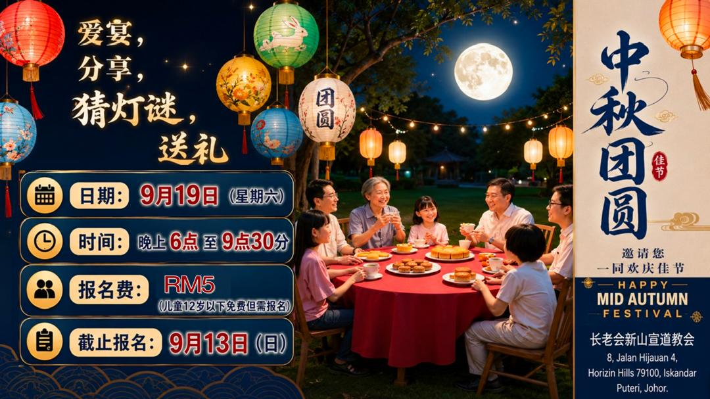
放大查看 ＋9月19日・星期六・6:00 PM
爱宴、分享、猜灯谜与送礼，一家大小同享温暖团圆夜。A warm evening of dinner, sharing, lantern riddles and gifts for the whole family.
9月19日・星期六
中秋布道会同时也是联合主日崇拜；9月20日早堂暂停一周。The Mid-Autumn evangelistic gathering will also serve as our combined worship service. Sunday morning worship on 20 September will be paused.
10月10日・星期六・12:00 PM
支持为末期癌症患者提供免费照护的以爱社区及临终关怀中心。Supporting Yi Ai Community Hospice Care Centre, which provides free care for terminal cancer patients.
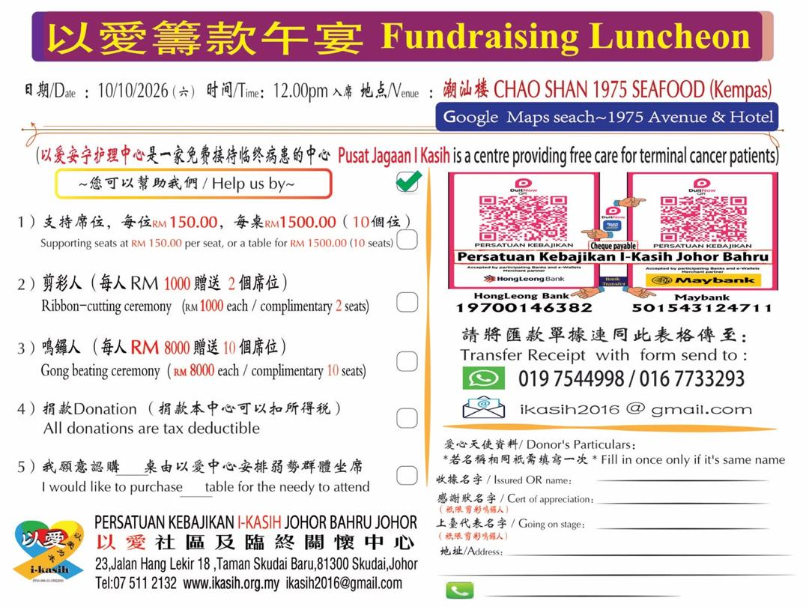
放大查看 ＋CHAO SHAN 1975 SEAFOOD・KEMPAS
可认购席位、餐桌或参与捐款；完整支持方式请参阅活动资料。Reserve seats or tables, or make a donation. Please refer to the event information for full details.
9月2日・星期三
适逢学校假期，学生事工将在当天休息一周。The student ministry will take a one-week break during the school holidays.
10月25日・星期日・7:30 PM
管弦乐团与诗班联合呈献。地点：Dewan Serbaguna Johor Jaya。Presented jointly by orchestra and choir. Venue: Dewan Serbaguna Johor Jaya.
COMMUNITY・团契生活
从孩童到长者，每个生命阶段都有同行的群体。From children to seniors, every stage of life has a community in which to belong and grow.
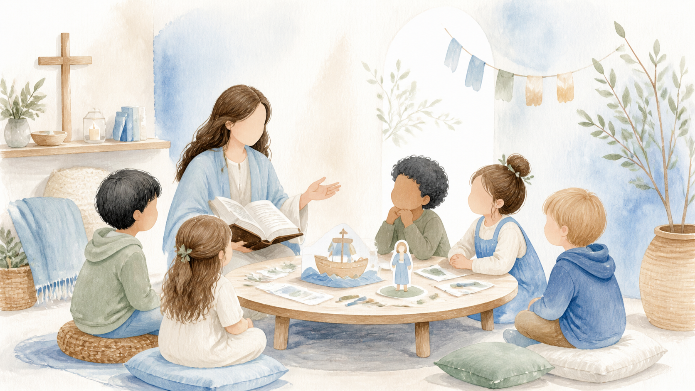
周六
7:30 PM — 9:00 PM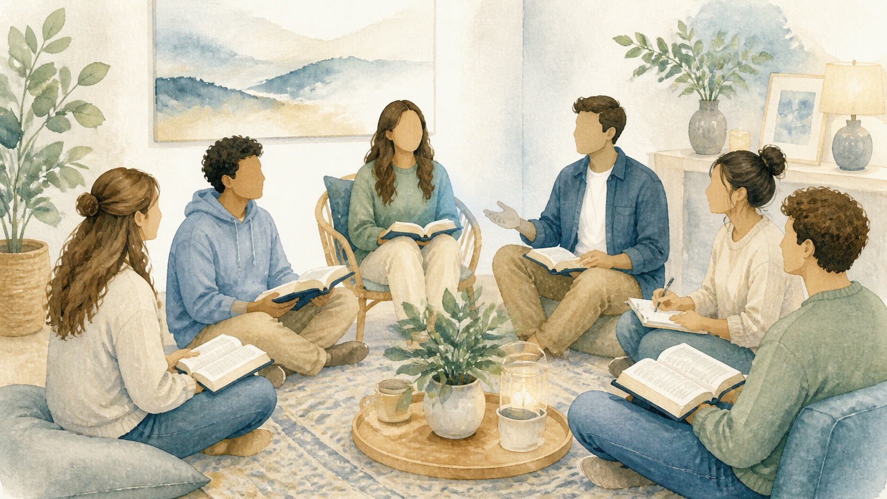
周六
12:00 PM — 1:30 PM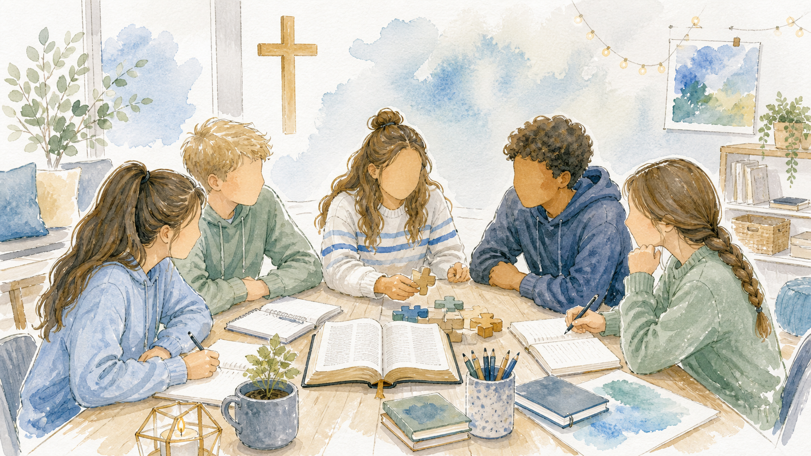
周六
3:00 PM — 4:30 PM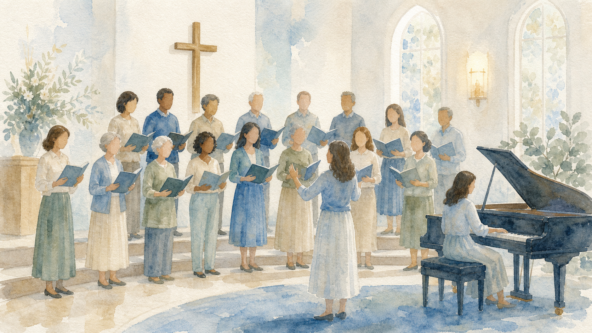
周六
4:45 PM — 6:00 PM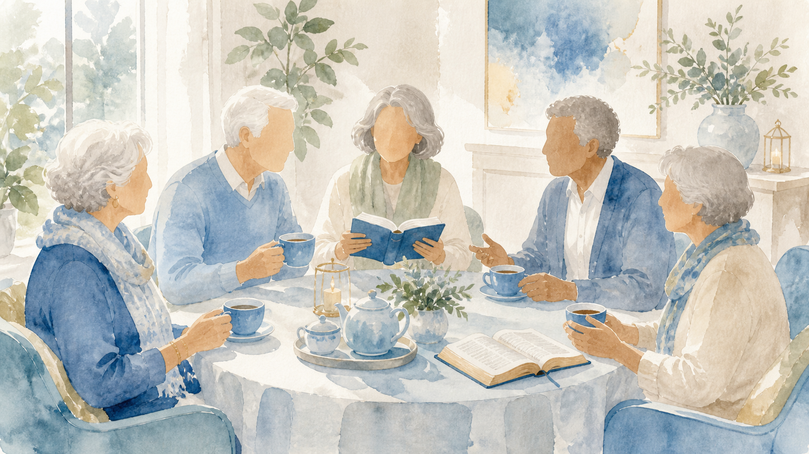
每月两次・周四或周五
9:30 AM — 11:30 AM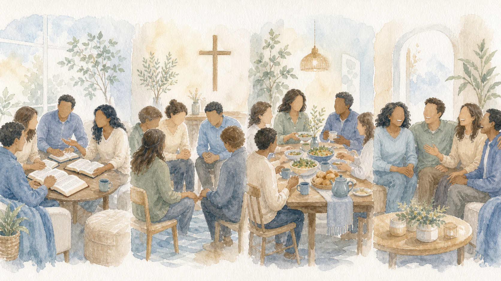
周日
12:00 PM — 1:30 PM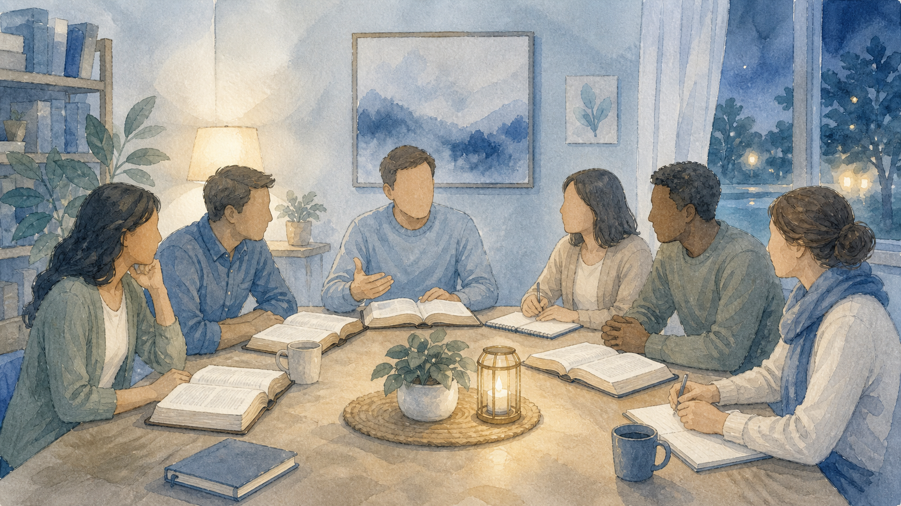
星期三・晚上
8:00 PM — 10:00 PM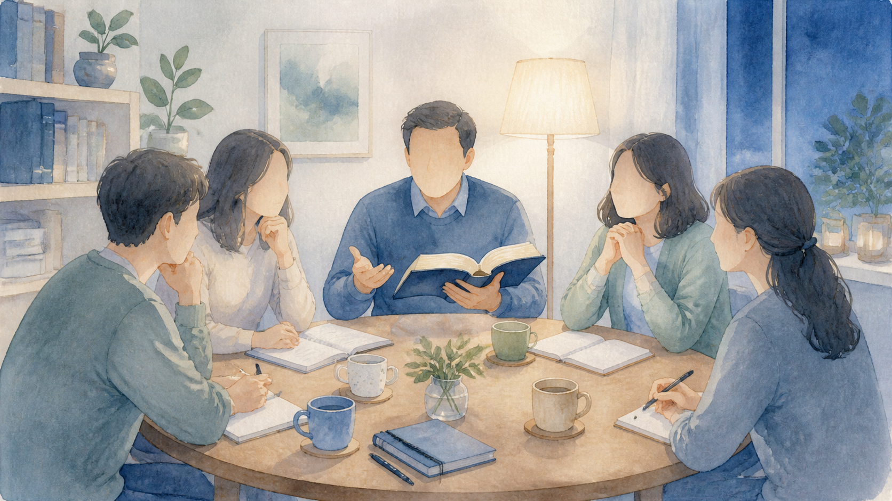
星期四・晚上
8:00 PM — 9:00 PM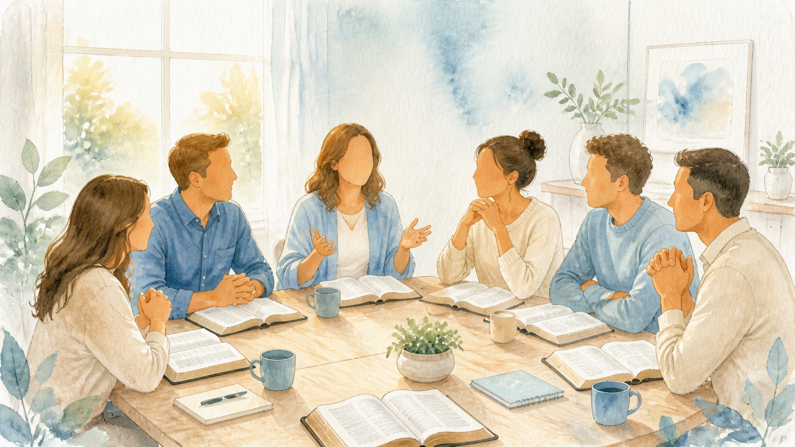
星期一・早上
10:00 AM — 11:00 AMOUR CALLING・我们的呼召
我们盼望建立一个以基督为中心、充满爱与真理的教会，在社区中见证福音。We seek to build a Christ-centred church filled with love and truth, bearing witness to the gospel in our community.
To proclaim the true teachings with sincerity and to prioritize evangelism as our great mission.
To establish a church of love and truth.
WORDS OF LIFE・生命之言
Let God’s Word quiet our hearts.
01“你们所有劳苦担重担的人哪，到我这里来吧！我必使你们得安息。”
马太福音第11章第28节・Matthew 11:28・新译本 CNV
02“看哪！弟兄和睦共处，是多么的善，多么的美。”
诗篇第133篇第1节・Psalm 133:1・新译本 CNV
03“你要一心仰赖耶和华，不可倚靠自己的聪明；”
箴言第3章第5节・Proverbs 3:5・新译本 CNV
04“我把你的话藏在心里，免得我得罪你。”
诗篇第119篇第11节・Psalm 119:11・新译本 CNV
COME VISIT・欢迎来访
欢迎你与家人前来敬拜。Come worship with us this weekend. You and your family are always welcome.
地址 ADDRESSNo 8, Jalan Hijauan 4, Horizon Hills,
79100 Iskandar Puteri, Johor
电邮 EMAILcmc.horizon@gmail.com